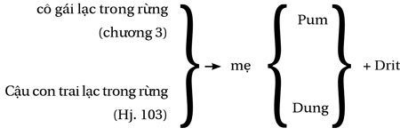

Vấn đề trong cuộc đua với đám chuột là nếu bạn thắng, bạn vẫn là một con chuột.
– Lily Tomlin
NHỮNG KHÁT VỌNG VỠ VỤN
Bi kịch của con người đánh mất khát vọng đến từ Kịch Bản Cuộc Đời. Bạn làm theo chính xác các quy tắc, lề thói được truyền lại từ cha mẹ, thầy cô, bạn đồng trang lứa – kéo theo là một bằng cấp mắc mỏ, một công việc nhàm chán, một danh mục đầu tư chẳng đi đến đâu và một đống nợ. Bạn có nhà, có xe, có thẻ tín dụng nhưng ngày đến tự do thì không biết khi nào.
Điều đã xảy ra là một sự thật đau đớn: thay vì đi con đường riêng, bạn gia nhập đám đông. Bạn trở thành một diễn viên của Kịch Bản Cuộc Đời, bạn có lựa chọn nhưng cả hai đều dẫn đến cùng một cái kết đắng ngắt, bạn đã bị buộc tham gia vào một trò chơi mà ở đó có rất ít khả năng chiến thắng.
Cuộc sống theo Kịch Bản Cuộc Đời vẽ ra cho những diễn viên của nó là:

Kịch bản này là có thật. Nếu bạn nghĩ nó do tôi bịa ra thì có thể “nước chưa đủ nóng”. Kịch Bản Cuộc Đời ru ngủ bạn giống như con ếch trong nồi nước đang đun từ từ. Không ai sẵn sàng nhảy vào nước đang sôi, nhưng chúng ta lại thoải mái với nồi nước đang ấm dần lên.
Kịch Bản Cuộc Đời cũng tương tự như thế. Không ai muốn một cuộc đời tầm thường. Nhưng thời gian trôi qua từng ngày, từng tháng, từng năm, cho đến một ngày bạn không thể thoát ra được. Hoặc tệ hơn nữa là đến lúc nhận ra thì đã quá tuổi, không còn đâu sức lực và ý chí.
Cho dù lựa chọn nào, kết quả cũng là: khiến bạn trở nên nô lệ cho vật chất, cho công việc, cho ngân hàng, làm con chốt thí cho truyền thông, cho những trò hài nhảm.
Toàn những thứ vớ vẩn.
Đã đến lúc lấy lại cuộc đời của bạn.